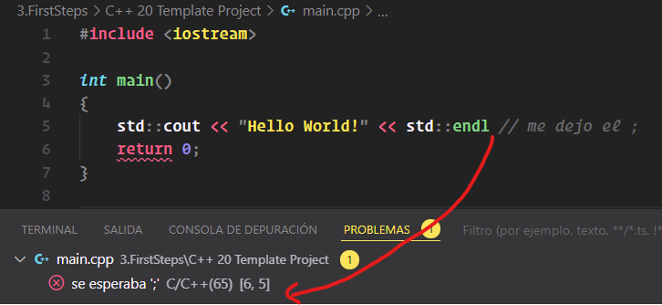

¿En qué consiste la Programación Visual?
En la programación visual, los elementos del lenguaje de programación están disponibles en forma de bloques diseñados de manera gráfica, por lo que también se la llama programación gráfica. La apariencia y el etiquetado de los módulos permite identificar qué tarea en el flujo del programa pueden resolver.
Este estilo de programación fundamental, también llamado paradigma de programación, presenta, entre otras, las siguientes características:
- Visual: los elementos se arrastran y sueltan en el flujo del programa para integrarlos.
- Orientado a acontecimientos: cada paso del programa comienza cuando ocurre un acontecimiento previamente definido.
- Imperativo: la programación consiste en una secuencia de comandos.
- Orientado a objetos: hay objetos individuales con tareas definidas asignadas.

¿En qué se diferencia de la Programación "normal"?
La principal diferencia es que los programadores visuales no tienen que lidiar con las complejidades de la sintaxis de comandos. Tampoco se necesita aprender el engorroso “vocabulario” de un lenguaje de programación. En la programación “normal”, se requiere un alto grado de abstracción para obtener el resultado deseado a partir de las reglas del lenguaje de programación. Aunque muchos editores de programación tienen la función “Autocompletar”, para que los comandos se completen y los procedimientos se cierren por sí mismos, los programadores son susceptibles de cometer errores: si se olvida un carácter, toda la tarea da error. Esto a menudo requiere una larga búsqueda de errores.
¿Cuáles son las ventajas e inconvenientes de la Programación Visual?
La Programación Visual presenta los siguientes pro y contras:
| Ventajas | Desventajas |
|---|---|
| Menos Costoso | Escalabilidad limitada de la plataforma |
| Base de Conocimientos Accesible | Potencial Limitado |
| Desarrollo de software más rápido | Tedioso y voluminoso |